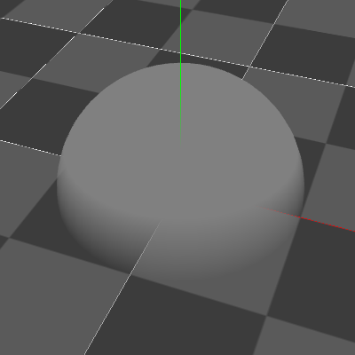
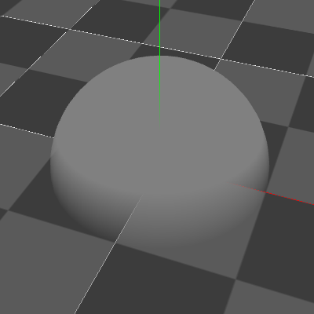

1.60 New Features¶
Common¶
Basic¶
Added a behavior for child particles to follow the position of the parent particle in position inheritance.
Position¶
Added a method to move with a path
Added a View Offset to always show a particle on a center in a screen
Scale¶
Added FCurve(Single)
force field.¶
Added a lot of different force fields.
Procedual Model¶
Added Procedual Model.
In Effekseer, you can create simple models by simply adjusting parameters. You can display your model as it is or use it for generating positions.

Easing¶
Added many easing types.

Rendering¶
Added many features to rendering
Up to six images can now be used to create a variety of expressions such as distortion, blending of images, and image cropping without the need for material settings. Soft particles can now be used to create a natural boundary between the background and the image.

 

Added animation transitions with Fade
It uses linear completion for animation transitions. This will ensure that the image does not change suddenly.
Textures are now loaded as NoMipMaps when the file name includes _NoMip.
Material¶
Added a node to implement soft particles in materials.
Added a node to get the magnification of the effect.
Dynamic parameter¶
Added a step function
Optimization¶
Implemented multi-threaded updates. Faster update speed.
Geometry instances implemented. Improved speed when displaying multiple copies of the same model.
Tool¶
Packaging¶
Added a feature to create a package.
You can export all the files related to an effect to a single package, or import them from a package.
UI¶
Changed the behavior of the docking panel
Changed to frameless window (Windows)
Recording¶
Added a recording size scaling factor to the recording function.
Options¶
Added a setting to change the mouse mapping to manipulate the viewport (you can select Maya style, Blender style, etc.).
Environment¶
Add an option to show a ground
Runtime¶
Major refactoring of the C++ source code.
Safety has been improved. However, a number of destructive changes have been made. Please read the readme of the runtime for details.